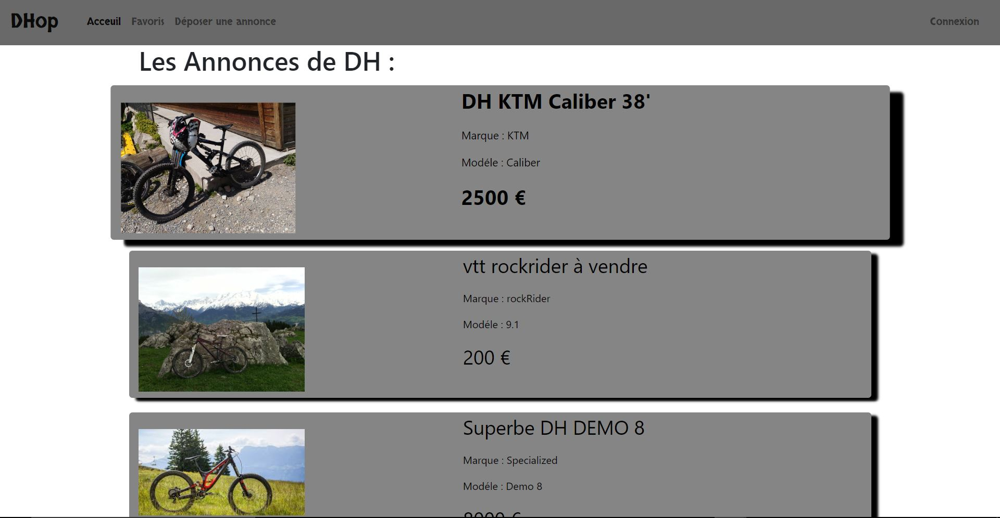

Projet DEUS:
Ce projet est un projet de BAC. L'objectif était de concevoir un drône terrestre pouvant être controlé par un smartphone (via Bluetooth), par un joystick, ou par un ordinateur. Il devait également nous transmettre un retour vidéo en direct via une Raspberry Pi. Ce projet terminé nous a valu une note de 18/20 pour notre BAC. Un bras avait également été incorporé sur le drône à la fin du projet pour le rendre encore plus fonctionel. Il ne nous manquait plus qu'à insérer l'application de contrôle du bras.
Projet Linux server
Mise en place de services tels que des serveurs Web, FTP, MySQL... dont un Serveur Web servant à contrôler une machine à café connectée (Colibri), un service video diffusant les images d'une caméra IP en temps réel. Mise en place d'un CMS WordPress sur Linux Server.
Projet de stage à SOMFY:
Durant mon stage, j'ai eu comme projet de veiller à la bonne migration des fichiers du service BI de SOMFY Monde à Cluses. J'ai dû faire la migration des différents fichiers de l'ancienne version du logiciel de Business Intelligent. Une fois la migration effectuée, il a fallu vérifier les reports afin de valider leur bonne migration et de les reprendre à l'aide de requêtes SQL afin que les rapports initiaux et finaux soit identiques.
Projet de BTS
Mon projet de BTS consiste à rendre une cellule robotisée autonome et intelligente en toute situation. Celle-ci doit agir en fonction des différents capteurs et non plus dans un ordre procédural comme la plupart des cellules de ce type. Dans cette cellule se trouve un bras robotisé Staübli, ainsi qu'une machine-outils Cazeneuve. Grâce à sa cinquantaine de capteurs, ainsi que ceux du robot et de la machine-outils, cette cellule analyse constament tous les état de ses differentes parties. Afin de faire fonctionner ce projet, le code se fait sur Twincat 3.1, un noyau temps réel pour Windows 7. Une version modifiée par Twincat de Microsoft Visual Studio professionnel 2015. Le code contrôlant tous ses éléments est en C++, et la communication se fait grâce à un serveur ADS et un bus EtherCAT.

Projet personnel DHop :
DHop sera un site de vente en ligne de DH (VTT de descente extrême - Down Hill) de particulier à particulier, il disposera d'un espace membre, et sera entierement securisé. Le site est pour l'instant en cours de développement.